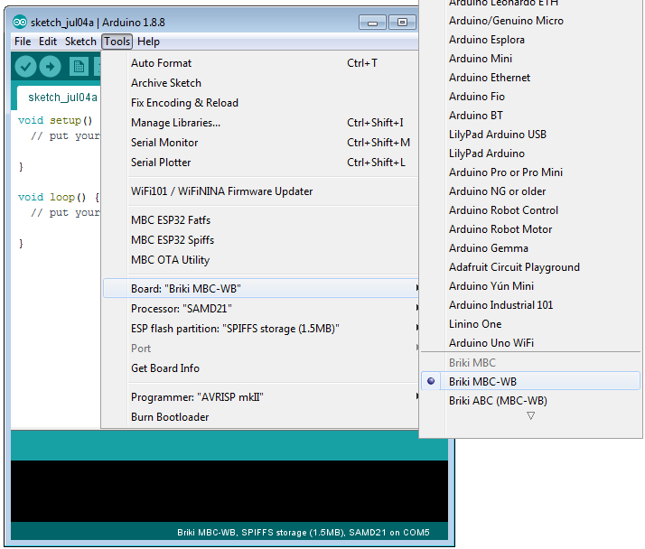
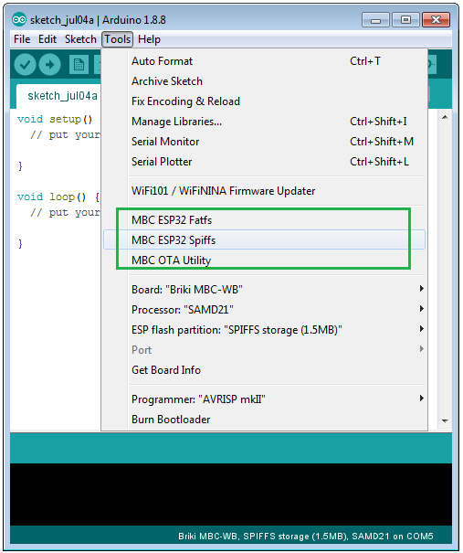
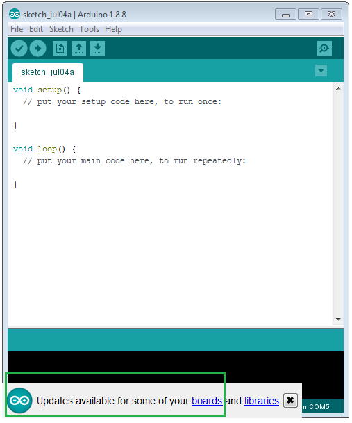
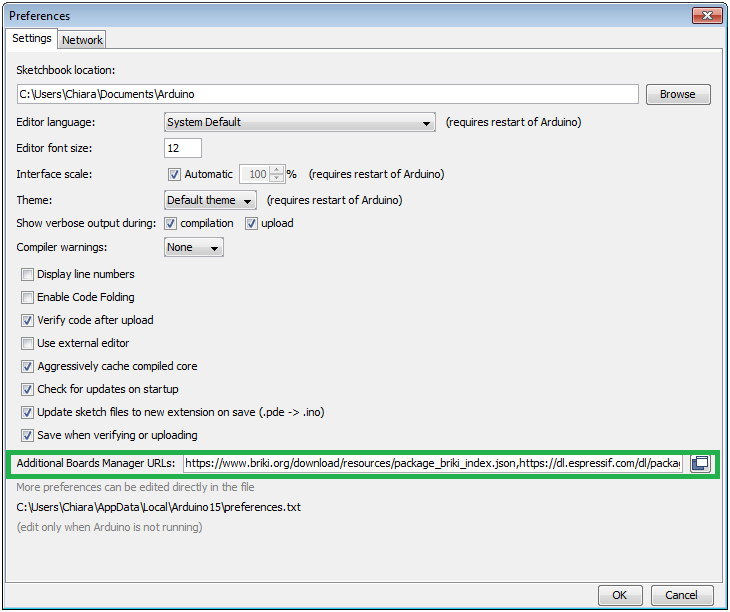
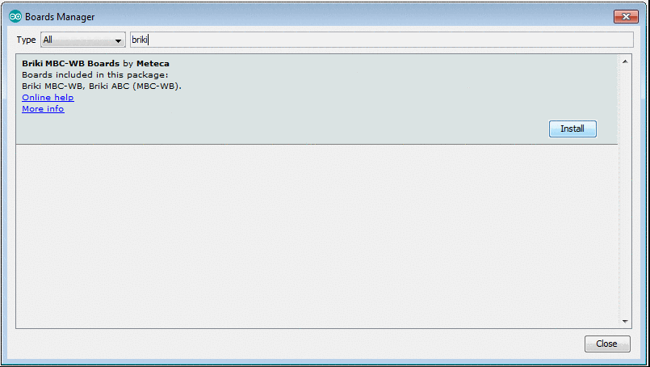
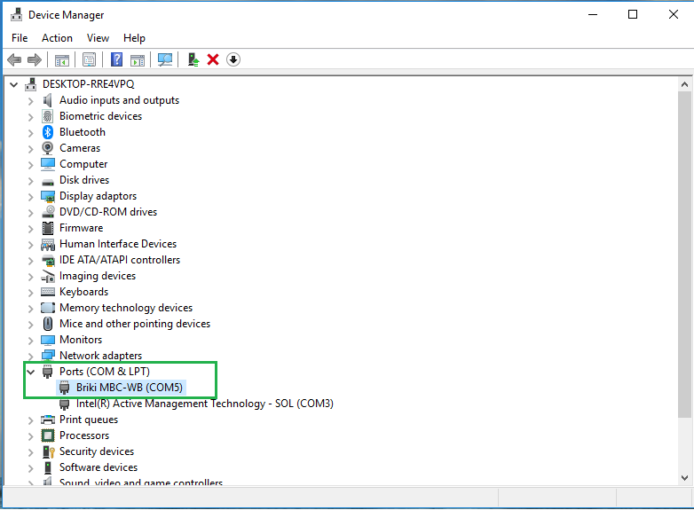
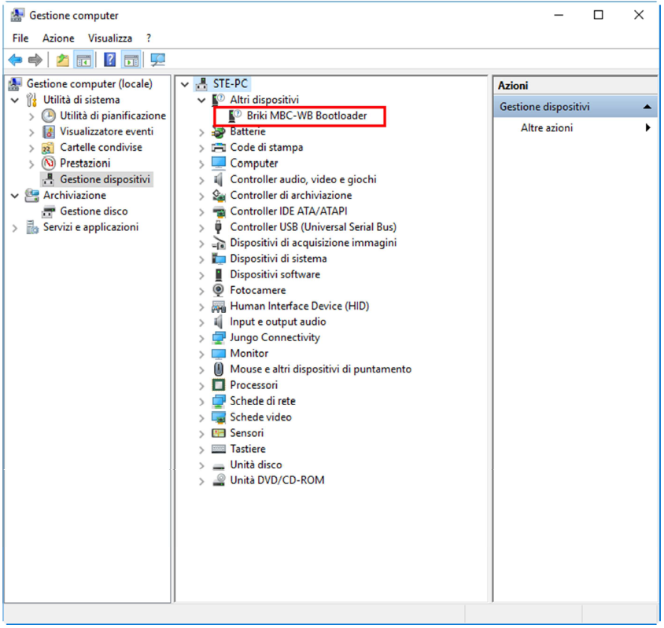
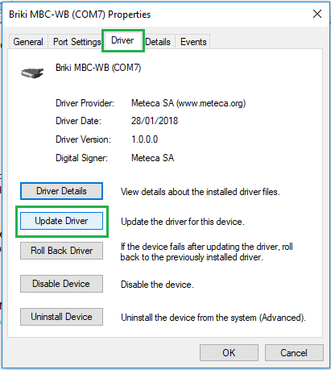

The following document provides the instructions to set up the Arduino® environment to program and upload sketches on MBC-WB board.
To simplify installation, we provide an executable for the main OSs that will perform all needed steps for you. However, if you have any issue with the installer or you want to know the steps installer makes during installation process, check out manual install section.
Prerequisites
To setup the environment you first need to install the Arduino IDE. The Arduino IDE can be downloaded from the official website: https://www.arduino.cc/en/Main/Software.
Note for Linux users: to complete installation, you will need to set serial port permission. Please read this reference or run arduino-linux-setup.sh script you will find in IDE folder to set permission.
Once the Arduino IDE is installed, download the MBC-WB platform installer for the OS you prefer. Installer is available for:
Windows: https://www.briki.org/download/resources/briki_arduino_installer.exe Linux 64 bit: https://www.briki.org/download/resources/briki_arduino_installer_linux64.tar.gz Linux 32 bit: https://www.briki.org/download/resources/briki_arduino_installer_linux32.tar.gz MAC OSX: https://www.briki.org/download/resources/briki_arduino_installer_osx.tar.gz
Platform installation
Before lanching the installer, make sure the Arduino IDE is closed (or it will overwrite the settings the installer changes). Also consider that installer will download the platform from the internet, hence make sure to have an internet connection available when launching it.
On Linux and Mac you will need to extract the archive you have just downloaded before proceeding.
Once everything is ready you can start installation by double clicking on the installer file. Under Linux and Mac OS, if you have problems by launching the installer in this way, you can open a terminal and drag and drop the file there. Then press enter and the installation will start.
At the end of the installation procedure you can open the Arduino IDE and check that everything went fine. You can look at Tools > Boards menu and you should find Briki MBC-WB listed among the other boards.

You can now try to connect a board and load a sketch on the both the microcontrollers onboard to check the correct installation of the platform.
The installer will also install additional tools (like the one for performing OTA updates). You can check that tools are correctly installed by opening Tools menu:

If you changed the Arduino sketchbook folder from its default position, installer will fail to install additional tools and you should proceed by manually installing them.
For Windows users, installer will also install drivers at the end of installation procedure. If you connect the board to the USB but you are not able to see a COM port listed under Tools > Port menu probably something went wrong. See section Troubleshooting with drivers for help.
Once the platform is installed, you can start to explore the features of the board by looking at the available examples. By selcting MBC-WB board from Tools menu, a new bunch of examples will be available under File > Examples > Examples for Briki MBC-WB. The section Examples for Briki MBC-WB will only be available when Briki MBC-WB is selected as board.
Platform updates
The Briki installer will automatically insert the Briki boards definition inside the Board Manager of the Arduino IDE. This means that, as soon as a new update is available, you will be notified by the Arduino IDE itself.

When a new update is available you can choose whether updating the platform by the Arduino IDE Board Manager or by using the installer you used for the first installation.
If you choose to use Arduino IDE you can simply press on board link you see on the previous image. The board manager window will appear and here you can update the platform by pressing Update button:

Updating the platform with board manager won't update the additional tools you can see in Tools menu. Updates to additional tools are something that don't occur often but, if something requires an update to one of those tools, you may be using an outdated version if you update the platform using Arduino board manager. To fix this you can manually update additional tools or running the Briki installer.
If you want to make sure you always running the last version of the additional tools (as well as the platform), you can use the Briki installer you already used the first time you installed the platform. The installer will always look for the latest version of the platform and will fetch from it the updated tools, automatically placing them in the right location to be used.
Just remember to close the Arduino IDE before running the installer.
Manual install
If something goes wrong with installer or if you want to have the full control over the installation process you can manually install the platform by following the steps described below.
The first step is to add the Briki board definition inside the Board Manager of the Arduino IDE. In order to do that, from the Arduino IDE open File > Preferences menu (or Arduino > Preferences in Mac Osx) and paste the following links inside Additional Board Manager URLs field: https://www.briki.org/download/resources/package_briki_index.json, https://dl.espressif.com/dl/package_esp32_dev_index.json

Press OK button to make the changes take effect and open the Board Manager in Tools > Board > Boards Manager... menu. You can now install the platform by typing Briki or MBC in the search field or simply scroll down the boards list until you see the entry Briki MBC-WB Boards by Meteca. Once you identified the correct platform, press Install button and wait for the installation to finish.

As soon as Board Manager completes the installation, you will be able to compile and upload sketches on the board. However you will still need to install the additional tools. Besides, if you use a Windows computer, you will need to install the drivers to let the computer recognize the board when you connect it.
Additional tools, as well as Windows drivers, are located inside the platform installation directory. Before moving forward is therefore needed to identify the location of the installation directory. This location changes dipendently by the OS you are currently working with.
On Windows, platform resides under the hidden folder AppData located under User folder. You may need to enable display of hidden folders to be able to browse in the platform installation directory.
The location of the platform installation directory is the following:
C:\Users\CurrentUser\AppData\Local\Arduino15\packages\briki\hardware\mbc-wb\1.0.0\
Linux places the platform installation directory inside the hidden folder .arduino15 located under home directory. The final location of the platform is the following:
~/.arduino15/packages/briki/hardware/mbc-wb/1.0.0/
On Mac OS, the platform installation directory is placed inside the hidden folder Library in the home folder. The final location in this case is the following:
/Users/CurrentUser/Library/Arduino15/packages/briki/hardware/mbc-wb/1.0.0/
Note that folder 1.0.0 specified above represents the version of the platform installed and it may change dependently by the version you have installed.
Additional tools installation
The platform comes with some external tools that extend the capability to interact with your board beyond the standard Arduino experience. The currently available tools can be used to perform OTA updates on all the MCUs onboard and to update the storage partition of the ESP32 MCU (SPIFFS or FAT).
If you used Briki installer to install and update the platform you should already have this tools ready to be used. If you used Board Manager instead, you need to manually install them following the operations described below.
The first step is to close the Arudino IDE. Then locate the platform installation directory. Inside this folder, you can find a "tools" folder and, inside it, a folder named "extensions". This folder contains all the additional tools that you need to install. To proceed with the installation just copy the whole content of "extensions" folder in the Arduino sketchbook folder. The default location of the Arduino sketchbook folder is Documents/Arduino for Windows and Mac OS and ~/Arduino for Linux. Inside the Arduino sketchbook folder you have to create a new folder named "tools" (if you already have a tools folder inside the sketchbook directory you can skip this step).
The final path should look like the following:
Documents/Arduino/tools/
Now paste the folders you have just copied from "extensions" inside it and the installation is completed. To see the result, open the Arduino IDE and you should see the just installed tools under Tools menu.
Drivers installation
If you use Linux or Mac you don't need any further step to start using your MBC-WB board. If you use a Windows OS you need to install the board drivers in order to interact with the board through the USB connection.
Drivers can be found in the MBC-WB installation directory, under drivers folder. The path should look like the following:
C:\Users\CurrentUser\AppData\Local\Arduino15\packages\briki\hardware\mbc-wb\x.x.x\drivers
After having confirmed that you want to proceed with the installation, when asked, in few moments the installation will be complete. Now you can connect your MBC-WB to your computer and a new COM port will be listed. You can use this port to interact with your board.
It is suggested to try loading a sketch in the board (on both SAMD21 and ESP32) to check the correct installation of drivers.
Troubleshooting with drivers
If sketch upload fails you need to check that drivers are correctly installed. To do that you can use Windows Device Manager.
With the board plugged on your computer, open Windows Device Manager (on Windows 10, press Win button + X and select Device Manager or, from a command prompt write the command devmgmt.msc and press enter). You should be prompted a window like this:

If you see Briki MBC-WB under COM port, drivers are correctly installed. If you see Briki MBC-WB in any other section probably driver installation went wrong:

If this is the case, you can try to manually install drivers in order to fix the problem. Always from device manager window, open Briki MBC-WB device properties (right click on Briki MBC-WB and then select Properties). From the new window that will appear, select drivers tab. Here you can see the drivers details as well as install or update drivers if they are not correctly installed:

In this window, select Update drivers button and, when prompted, select Browse my computer for driver software option. Then it's enough to point drivers folder of MBC-WB platform (the same where briki_drv_installer.exe is located) to start the installation.
At the end of installation procedure, try to unplug and plug again the board on your computer and check that a new COM port has been correctly enumerated.